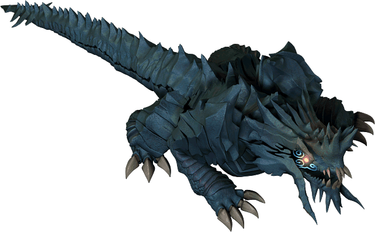
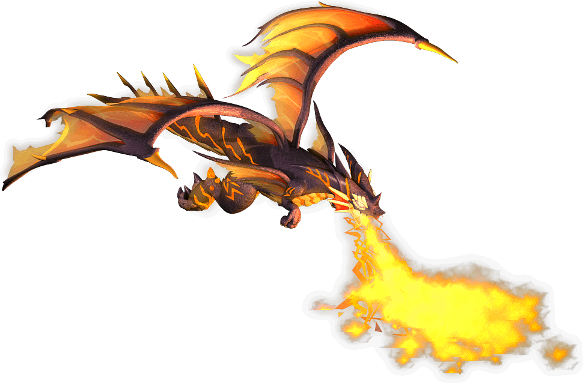
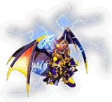

艾特拉觀光導覽
背景故事
故事1 不為人知的世界旅人的軼事
據說被譽為最強生物的龍，其力量連眾神都感到恐懼。
創造龍的眾神原本只想利用牠們來打仗，
但擁有高度智慧的龍不再甘願成為眾神的工具。
為了拉攏成為頭痛人物的龍，眾神賜予牠們地位與名譽，甚至魔法，
但最後除了成為善之勢力與惡之勢力守護者的龍以外，
所有的龍都消失到不知何處去了。
繼續閱讀
另一方面，生活在日益強大的人類身邊的怪物們
生存變得越來越困難。靠搶奪人類糧食為生的哥布林們
勢力逐漸衰退，彼此緬懷往昔、哀嘆不已。
就在某一天，一名可疑的男子拜訪哥布林們，
向他們提出了一個很棒的提議。離開邁索西亞，去一個你們可以當主人的地方，
那裡能利用精靈的力量成就一切事情，
不用說人類，誰都不會來打擾，可以照自己所想的方式生活･･･
被殘忍的人類奪走居所的哥布林們
遷移到名為「艾特拉」的地區，並在那裡獲得了幸福。
即使糧食不豐富，也能運用變強的力量補足不足的糧食，
而且也沒有會讓他們痛苦的存在。
然而，那份幸福並未能長久持續。
巨大的影子，一旦牠們出現･･･他們的自由就成了不會再到來的夢。
消失蹤影的代表性龍，克里莫拉克夏開始拒絕伊亞的召喚。
牠想避免戰爭，身邊有顫抖著卻仍支持牠的怪物們，以及寶物和棲身之所，
但在伊亞下令的神聖騎士們的攻擊下，
夢想逐漸被摧毀，牠只能帶著受傷的身軀逃亡。
這個消息讓聯手對抗眾神、代表大地的斯科爾菲吉
以及代表天空的雷歐加爾特感到危機，
於是決定遷移到能避開眾神視線的地方。
他們原以為只要以彼此的力量互補弱點，就不會有敵手，
但眾神所保障的地位與名譽，以及寶物這些被賦予的財產，
並沒有給他們一個能安息的地方。
故事2 與厚臉皮哥布林的對話
很久很久以前，住著一隻心地善良的年幼哥布林。
好奇心旺盛、對任何事都很感興趣的哥布林，
想和人類也親近相處。
繼續閱讀
然而，人類卻把年幼的哥布林和牠的家人
趕到無法居住的深山裡。
哥布林們無處可去。
於是･･･他們被某人邀請，前往一個陌生的地方。
那裡有許多精靈朋友，沒有人欺負他們。
但是，心地善良的哥布林因為被人類欺負而心生恐懼，
為了不再被欺負，開始毆打朋友。
接著，那隻哥布林成了大將。
就在某一天，成為大將而心靈變得醜惡的哥布林
一邊吃著威脅搶來的肉一邊放聲大笑時，
不知從何處，天空中出現了巨大的影子。
聽說「克里莫拉克夏」被「伊亞」的勇士們狠狠修理後，
急忙逃來的「斯科爾菲吉」與「雷歐加爾特」這兩條巨龍出現了。
哥布林非常悲傷。
竟然又要被人欺負･･･為什麼偏偏是我！！真是壞龍。
雖然很想這樣斥責，
但面對擁有龐大身軀的龍，沒有取勝的自信。
於是，哥布林逃走了。
然後現在，牠在你面前流著淚求你幫忙。
要不要先教訓一下這隻厚臉皮的哥布林，然後去參觀那些巨龍呢？
艾特拉入場導覽
艾特拉地城雖然是德爾克雷比斯地區，
但與蒂魯歐/塞佩利歐不同，是充滿自然景觀與光線的地區。
你將能體驗到與在昏暗空間狩獵時截然不同的感受。
移動方法
條件
一般等級105以上
與阿尼姆斯81,29的NPC克魯魯對話，可以聽到前導故事。
之後選擇「想去巨大影子出現的地方」，
就會被傳送到艾特拉的入口，佛克原野中央。
出現怪物
請參照此處。
艾特拉・佛克原野
艾特拉地城・空龍/地龍討伐
背景故事
伊亞的神聖騎士，與消失蹤影的龍
據說被視為這個世界最強生物的龍，其力量連神明都感到畏懼。
創造龍的眾神曾試圖在戰爭中利用牠們，
但擁有高度智慧的龍並不聽從眾神的擺布。
繼續閱讀
眾神為了安撫變成麻煩存在的龍，
賜予牠們地位與名譽，甚至魔法能力，但結果是
除了成為守護龍的善之巴斯提安勢力與惡之蒂拉比由特勢力以外，
所有的龍都消失到眾神鞭長莫及的地方。
另一方面，由於日益增強力量的人類，眾多怪物
逐漸失去居所。
搶奪人類糧食的哥布林們數量也漸漸減少，
懷念著往昔而哀嘆。
就在某一天。
一名拜訪哥布林一族的詭異男子，向他們提出了一個誘人的提議。
他們說：「那是一個可以自己當主人、
能利用精靈之力做任何事、離開邁索西亞的地方，
不用說人類，連眾神都不知道的地方，所以可以想住多久就住多久。」
被殘忍的人類逐漸奪走居所的哥布林們
遷移到名為「艾特拉」的地區，在那裡過著平靜的生活。
雖然糧食不足，但託變強的力量之福，
確保糧食並不困難。
因為已經沒有會威嚇他們的存在了。
然而，平靜的日子並未持續太久。巨大的影子出現，他們自由的生活就此結束。
一直消失蹤影、代表火的龍克里莫拉克夏拒絕了伊亞的召喚。
克里莫拉克夏不涉足戰爭，只想和追隨自己的怪物們一起
尋找寶物，過著平靜的日子。
然而，那個夢想被殘酷地摧毀，
牠開始被伊亞下令的神聖騎士們追殺。
克里莫拉克夏帶著受傷的身體拚命四處逃竄。
這件事也讓聯手對抗神明、代表大地的斯科爾菲吉，
以及代表風與落雷的雷歐加爾特感到危機。
於是他們也開始尋找眾神鞭長莫及的地方。
他們原本認為只要彼此合力對抗，就沒有打不過的對手，
但要擺脫眾神賜予的地位與名譽，
以及寶物的誘惑並不容易。
他們認為不可能有比這裡更好的地方。
然而，有志者事竟成。
他們終於找到眾神鞭長莫及的世界，
移動到了德爾克雷比斯，但是……。
克爾克爾的請託
要挑戰艾特拉之主，地龍雷歐加爾特與空龍斯科爾菲吉，
首先必須實現在艾特拉大地上闊步的哥布林的願望。
入場時若向克魯魯詢問，如果你已經足夠成長，
應該會被請求去幫助因特原野的大將。
雖然聽厚臉皮哥布林的願望讓人火大，
但還是先去實現他們的願望吧。
條件
一般等級115以上
在滿足條件的狀態下，與因特原野左端中央的克爾克爾對話，
就會接連被提出各種要求。
克爾克爾的請託-1
- 履歷 克爾克爾的請託-1
- 開始條件 一般等級115以上
- 內容 從蒂魯歐/塞佩利歐地城的怪物身上
- 取得10個巨像族的戰鬥糧食，並與克爾克爾對話。
- 巨像族的戰鬥糧食只在此任務期間才會掉落。
- 另外，無法轉讓給他人，請注意。
克爾克爾的請託-2
- 履歷 克爾克爾的請託-2
- 開始條件 一般等級115以上
- 已解決克爾克爾的請託-1
- 內容 討伐出現在艾特拉各地的以下怪物。


- 另外，據報告指出，在此任務期間
- 若持續反覆擊倒討伐對象的怪物，過去的討伐紀錄會消失。
- 建議一隻一隻地擊倒。
克爾克爾的請託-3
- 履歷 克爾克爾的請託-3
- 開始條件 一般等級115以上
- 已解決克爾克爾的請託-2
- 內容 持有火龍之鱗並與克爾克爾對話。
- 鱗片當然會被收走。自己取得或購買都可以。
- 參考 克里莫拉克夏討伐
克爾克爾的請託-4
- 履歷 克爾克爾的請託-4
- 開始條件 一般等級115以上
- 已解決克爾克爾的請託-3
- 內容 持有10個青光石並與克爾克爾對話。
- 青光石當然會被收走。自己取得或購買都可以。
- 參考 德爾克雷比斯/塞佩利歐斯帕提姆
克爾克爾的請託-5
- 履歷 克爾克爾的請託-5
- 開始條件 一般等級115以上
- 已解決克爾克爾的請託-4
- 內容 討伐鏡之城混沌之間的戴爾，
- 持有戴爾的鏡子碎片並與克爾克爾對話。
- 戴爾的鏡子碎片只在此任務期間才會掉落。
- 另外，無法轉讓給他人，請注意。
- 參考 Dungeon/鏡之城
地龍斯科爾菲吉/空龍雷歐加爾特討伐
地龍/空龍是什麼?
在克里莫拉克夏火山的寶物庫中發現的書籍裡記載，
統御世界的5條龍當中的2條，
地龍斯科爾菲吉與空龍雷歐加爾特似乎在艾特拉大地上
一邊支配著哥布林，一邊旁若無人地生活著。
身為討伐克里莫拉克夏的伊亞神聖騎士的你，
就讓牠們再次沉眠吧。
入場條件
1.必須是包含9職(全職業)的隊伍/尤尼恩。
2.隊長已完成克爾克爾的請託-5。
3.當天0點～23點59分之間未參加過地龍/空龍討伐。
[備註]
隊長以外的人即使沒有完成克爾克爾的請託也沒問題。
隊長與克爾克爾對話後，位於因特原野的同一尤尼恩成員
會全員被傳送到艾特拉王地圖。
獎賞
每擊倒一隻人形後NPC就會出現。
與各個NPC對話，可以分別獲得一個
 地龍斯科爾菲吉 |  龍玉(斯科爾菲吉) 龍玉(斯科爾菲吉) |
 空龍雷歐加爾特 | 龍玉(雷歐加爾特) |
出現怪物
Quest/艾特拉・龍討伐/出現怪物
王地圖的流程
大致寫來是這樣
- 入場後擊倒左上深處的地龍
- 擊倒變成人形的2隻龍
- 從NPC那裡拿到龍玉後各自撤離
主要注意事項
第一次參加討伐的人務必要告知成員。
不要只依賴支援守護的自動恢復，也要好好吃肉。
從王身上獲得的裝備類道具大多比較重，
所以至少要空出40左右的Wei。
太重拿不動＝掉到地上＝消失，這可不是開玩笑的。
Wei吃緊的人，天上肉(雖然得連按)也是候補選擇。
輔助職業穿HP裝備挑戰會稍微輕鬆一些。
魔術師若有弧光之珠可以大幅提升，
已附魔的地下耳環(或吟遊耳環)・魔力石戒指×4・已附魔的追加地下裝備
再加上變身成戰熊，或有德爾克保護・地獄保護的話就更可靠了。
人面草・溫泉蛋若有庫存也該拿來用。
GM的祝福雖然強力，但每次都用的話一定會EP不足。
各職業包含輔助在內，HP至少要8000。
另外，龍們的攻擊是必中攻擊，所以「無效化傷害的技能・魔法」沒有意義。
遇到這種情況該怎麼辦？
Q:變成墓碑時的復活？ A:墓碑復活請迅速用科馬里克。
Q:後衛馬上就死了・・・ A:後衛的死亡率相當高，所以每個人最好各帶10個左右的科馬里克。
Q:前衛也馬上變成墓碑・・・ A:前衛除了CON修以外，也很容易變成墓碑。
Q:還沒到王地圖就死了・・・ A:帶大量肉連按，或是有帶圓桌的魔法師參加是關鍵。
Q:被傳送門吸進去了 A:踩上傳送門會立刻被傳送。沒有與NPC對話就拿不到報酬，請注意。
Q:被電到動不了了 A:空龍經過的路上有時會設置感電陷阱。空龍通過後如果開始響起音效，就是陷阱已設置的信號。
Q:那麼感電陷阱的位置在哪裡？ A:效果顯示為OFF的狀態下看不出來，請把效果顯示設為ON。
Q:哥布林們從畫面外移動過來？ A:或許是因為龍支配哥布林的劇情，龍的攻擊也會打到哥布林。因此「哥布林遭到空龍襲擊→哥布林追著空龍→與空龍距離拉開使目標解除→玩家剛好在追來的哥布林附近→哥布林攻擊玩家」是常見的模式。
Q:偶爾畫面會搖晃 A:除非登出否則不會恢復。請忍耐到討伐結束。
另外，在王地圖即使變成墓碑也沒有死亡懲罰
雖然沒有死亡懲罰，但變成墓碑時遺忘裝備會消失。
請事先拆下並存放到銀行或包包裡。
雷歐加爾特/斯科爾菲吉裝備升級
- 解除封印升級
- 可使用與裝備的龍名稱對應的龍玉來解放封印。
 雷歐加爾特的靈魂 | 要升級的封印武防具、龍玉(雷歐加爾特) |
 斯科爾菲吉的靈魂 斯科爾菲吉的靈魂 | 要升級的封印武防具、龍玉(斯科爾菲吉) |
- 雙擊對應的龍玉，游標改變後，點選要升級的封印裝備品。
- 升級有成功機率，失敗的話裝備品、材料都會消失。
- 另外，升級會變成另一種道具，因此原裝備的OP附魔會消失，專屬狀態也會重置。
- 解除封印後，即可進行100以上的專用附魔。
- 升級為(真)裝備或岡加裝備
- 持有龍玉的狀態下，與NPC克魯魯對話。
- 如果各持有3個龍玉，就可以把它們合成為升級材料。
 雙龍玉 雙龍玉 | 龍玉(斯科爾菲吉)3個、龍玉(雷歐加爾特)3個 |
- 雙擊雙龍玉，游標改變後，點選要升級的已解除封印的裝備品。
- 升級似乎必定成功。(失敗過的人請幫忙編輯)
- ※2013/8/20我升級了斯科爾菲吉鎧甲但失敗而壞掉了，在此記錄一下。
- 成功機率似乎比較高，但也有可能失敗。
盾與肩章沒有(真)裝備，會升級為岡加裝備。（例:雷歐加爾特盾→雷歐加爾特岡加盾）
龍玉（輔助武器）無法升級。
與解除封印不同，原裝備的附魔等附魔會被繼承。但專屬狀態會重置。
武器碎片的交換
(人形)空龍雷歐加爾特被討伐後，會出現名為雷歐加爾特的侍女的NPC。
可用各職武器碎片（種類不拘）合計250個與兩種龍玉，從以下裝備品中選一個交換。
護符
- 疾風項鍊 智慧項鍊 大地項鍊 守護項鍊 空龍項鍊 地龍項鍊
 腰帶
腰帶
- 疾風腰帶 智慧腰帶 大地腰帶 守護腰帶 空龍腰帶 地龍腰帶
留言
如果有這種資訊/那種資訊，請寫在這裡。
目前顯示最新的10件。請參閱留言頁面
- 先暫且公開看看。資訊/怪物相關等各種內容都歡迎。另外，關於地圖/出現怪物，打算比照塞佩利歐斯帕提姆設置在Monster/艾特拉內。在那之前請先隨意寫在這裡。 -- 週末騎士? 2012-05-22 (二) 02:42:39
- 現在雷歐加爾特偶爾會掉出解除品 -- 無名氏? 2012-10-26 (五) 00:50:20
- ↑人形？會動的那個？ -- ｈ? 2012-10-26 (五) 01:03:40
- 雖然是不同人但回答一下。確認過人形雷歐加爾特會掉落斯科爾鎧甲和燦爛的龍玉等。（都是已解除的） -- 2012-10-27 (六) 02:37:40
- 等不及週末的騎士先生，所以把出現怪物另外建了一頁。很抱歉。 因為不明白「與斯帕提姆相同」的意思，所以做成和雷皮一樣的感覺。 -- h? 2012-11-26 (一) 12:53:56
- &#